After the calls to drop him following a frustrating opening-game showing against DR Congo, Ronaldo delivered the loudest possible response - a brace either side of half-time, including the goal that made him the first player in football history to score at six different World Cup tournaments. Nuno Mendes added a stunning free-kick, an unfortunate Nematov own goal made it four, and substitute Rafael Leao completed the rout late on.
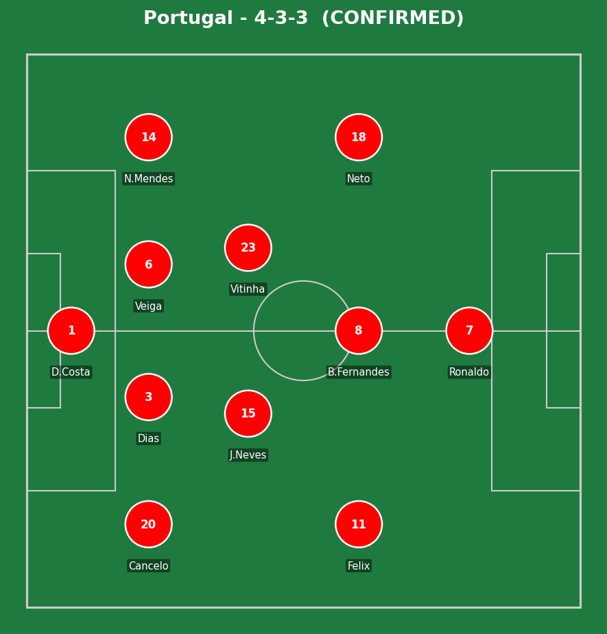
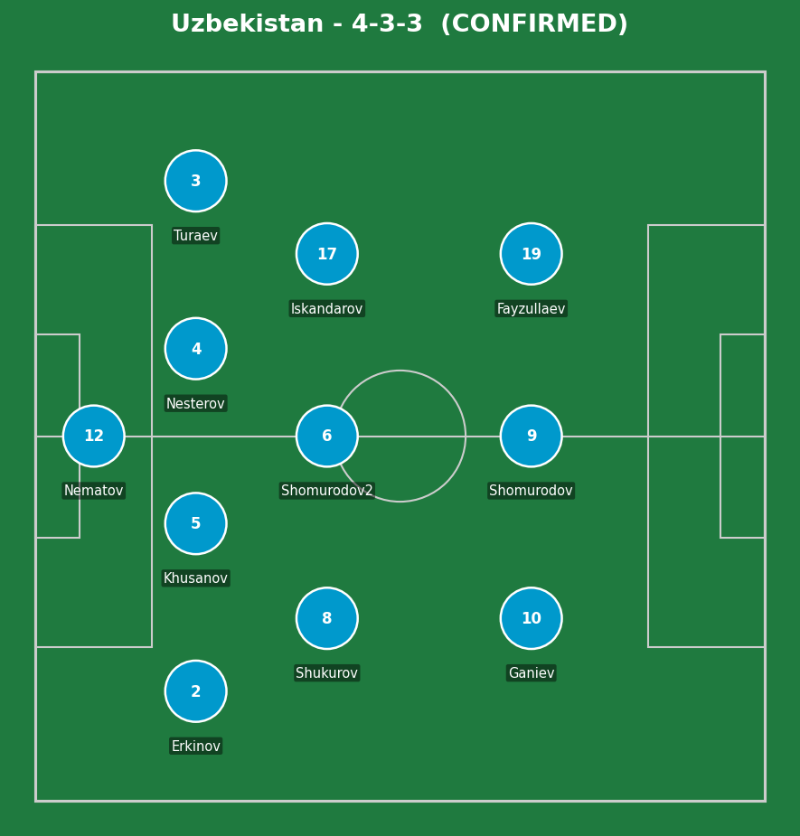
Portugal (4-3-3): Diogo Costa; Cancelo, Dias, Veiga, N. Mendes; J. Neves, Vitinha, B. Fernandes; Felix, Neto, Ronaldo. Uzbekistan (4-3-3): Nematov; Erkinov, Khusanov, Nesterov, Turaev; Shukurov, Shomurodov (2), Iskandarov; Ganiev, Shomurodov, Fayzullaev.
Portugal's improvement from the DR Congo draw was immediate and obvious - 56% possession and 17 shots reflects a side playing with far more urgency and directness, with Cancelo's overlapping runs from right-back repeatedly finding space behind a Uzbekistan back line that, for tournament debutants, defended with real discipline but couldn't match Portugal's individual quality in the final third.
Uzbekistan's resilience deserves genuine credit even in a heavy defeat - Fabio Cannavaro's side kept battling, created a real moment through Ganiev's disallowed strike, and didn't simply collapse once the scoreline got away from them. Coached by a World Cup winner as a player, their organizational structure held up better than the result suggests for long stretches.
The key moment of the match - and arguably of Ronaldo's tournament so far - was the sixth-minute goal itself. Confirmed history in football's biggest competition tends to silence doubt instantly, and from that point on this had the feel of a player who'd been waiting for exactly this kind of moment to remind everyone what he's still capable of.
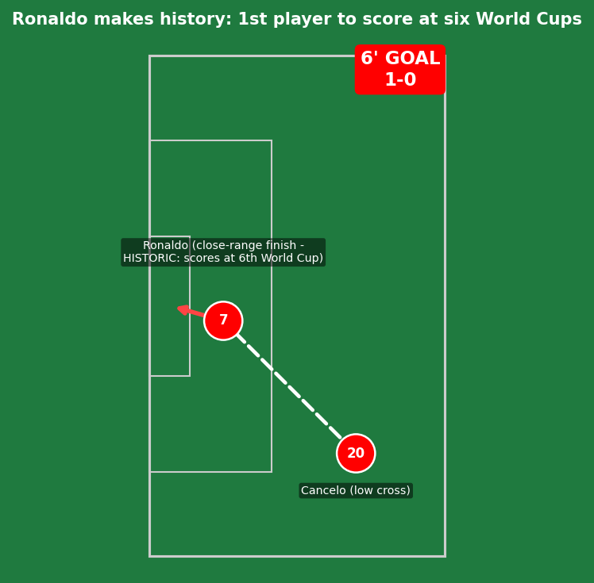
Joao Cancelo's low cross was precise, and Ronaldo's finish was clean and clinical from close range - good combination play, nothing extravagant required. The significance dwarfs the technique involved: this made him the first player in the history of football to score at six different World Cup tournaments, a record that may not be threatened again for a very long time given how rarely players reach even five. At 41 years and 138 days old, he's also now the second-oldest player to ever score at a World Cup, behind only Roger Milla's famous 1994 strike.
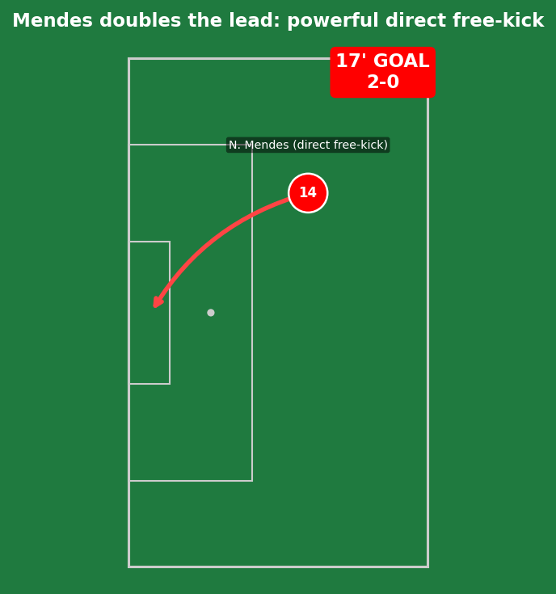
A genuinely excellent piece of individual technique from Portugal's left-back - stepping up himself rather than deferring to a more conventional set-piece taker, and curling a direct free-kick beyond Nematov with real power and precision. A statement that Portugal's quality runs well beyond just their captain.
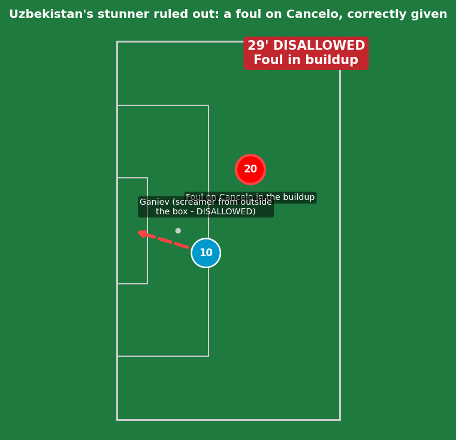
A genuinely spectacular strike from outside the box that would have given Uzbekistan a real lifeline - ruled out by VAR for a foul on Cancelo in the buildup. A heartbreaking moment for the debutants, but the correct call on the replay evidence; no referee error to flag here.
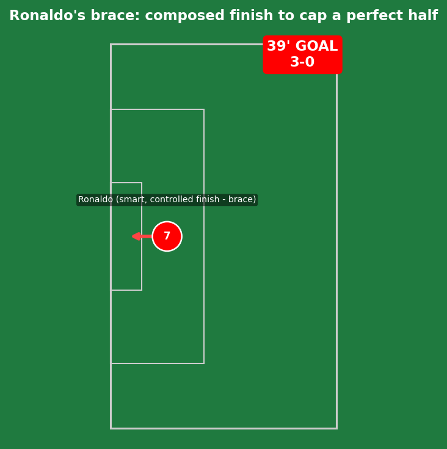
A smart, controlled finish with just the goalkeeper to beat - composed rather than spectacular, but exactly the kind of clinical edge that was completely absent against DR Congo. Two goals, two different qualities of finish, in the same half - the complete opposite of the player who shook his head in frustration just one matchday earlier.
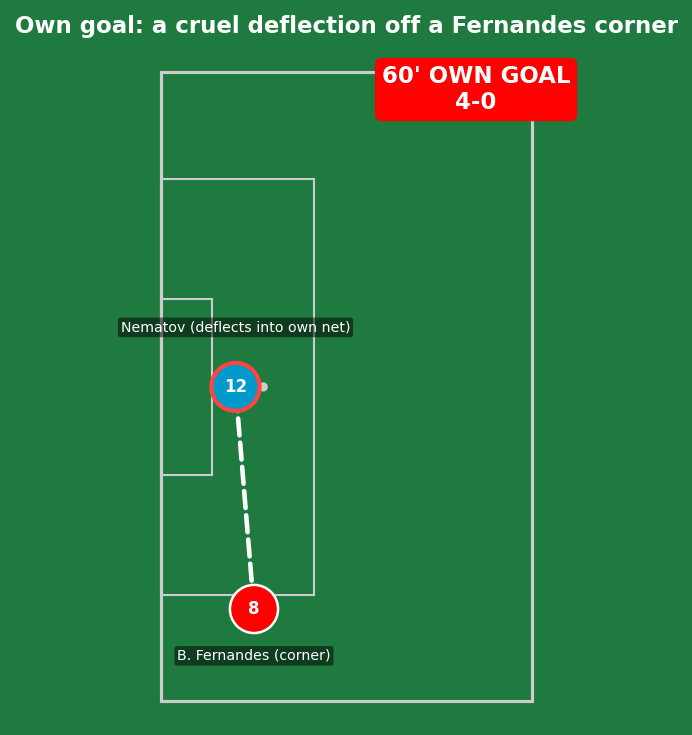
A cruel deflection rather than a clear individual error - Bruno Fernandes' corner took an unfortunate touch off Nematov on its way in, leaving the goalkeeper with no real chance to react. Misfortune more than mistake.
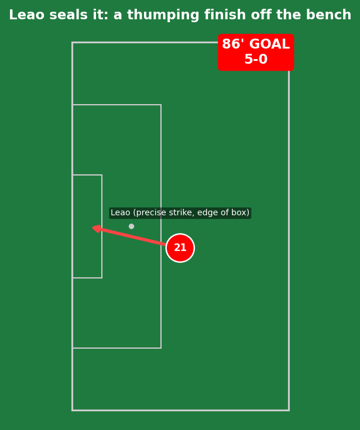
A precise, powerful strike from the edge of the box from a player who'd only been on the pitch a short while - a fitting final flourish to a complete attacking display, finding space that a tired Uzbekistan defense simply couldn't close down in time.
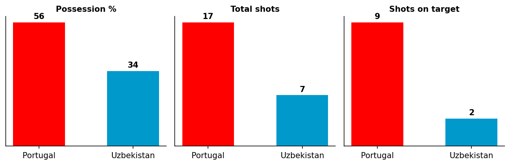
A 17-7 shot count and 9-2 gap in shots on target reflects total attacking superiority - a complete response from Portugal after a flat opening performance.
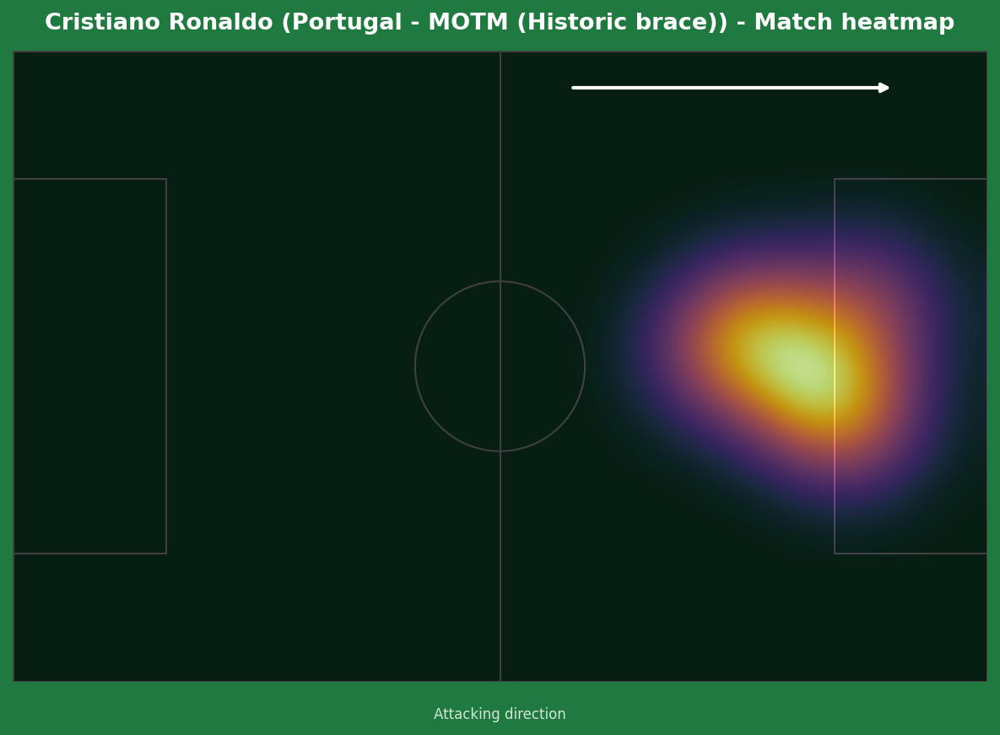
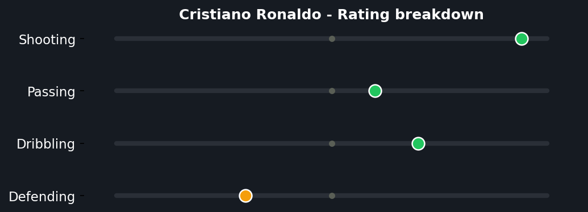
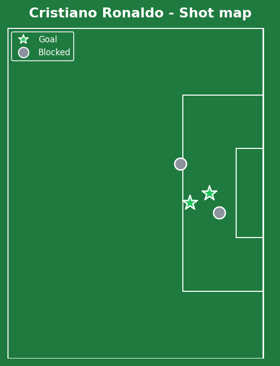
This is the full-circle moment this analysis flagged was possible after the DR Congo performance - real, fair criticism for missed chances one matchday, followed by genuine, deserved celebration the next. Ten career World Cup goals now makes him Portugal's all-time leading scorer at the tournament, ahead of the great Eusebio, and the six-World-Cups record may stand for a generation given how rarely players maintain this level into their forties. His own words afterward were notably measured - "records are always nice, but my goal is always to help the national team" - but make no mistake, this was a response to doubt delivered in the most emphatic way possible.
Illustrative reconstruction based on known event locations, not raw GPS tracking data.
Ronaldo - 9.0 ⭐ MOTM (historic brace)
N. Mendes - 8.0 (free-kick goal)
Cancelo - 7.5 (assist, constant threat)
Leao - 7.0 (impact sub goal)
Ganiev - 6.5 (brilliant disallowed strike)
Khusanov - 6.0 (goal-line clearance)
Nematov - 4.5 (unlucky own goal)
Fayzullaev - 5.5 (limited service)
Next: Portugal face Colombia, knowing a win secures top spot in Group K. Uzbekistan face DR Congo in a match that will likely decide their World Cup fate.
💬 Reactions & Comments